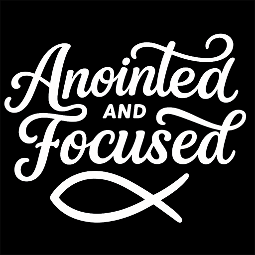

In That Order.
God never intended for our faith to stay inside church walls. It should shape how we live, work, lead, give, and serve every day.
At Anointed and Focused, we believe real transformation begins with Christ and extends into every area of life. Spiritual growth, disciplined living, wise stewardship, and purposeful work are all part of honoring Him.
We aren't chasing success for its own sake. We're pursuing the life God created us to live.
Everything begins with God. Before goals, before success, before influence, we seek His direction. Faith is not an accessory to life. It is the foundation we build upon.
Growth rarely happens by accident. Daily obedience, consistent habits, and faithful stewardship shape who we become. Discipline isn't punishment. It's preparation for the purpose God has given us.
Every resource God places in our hands matters. Our time, talents, finances, relationships, health, and influence are gifts to be managed with wisdom and gratitude.
We would rather be faithful than famous. We believe lasting impact comes from obedience to God, not chasing recognition from people.
Becoming more like Christ is a lifelong journey. Every season offers an opportunity to grow in wisdom, humility, courage, and love.
God's blessings are never meant to end with us. As we grow, we're called to encourage others, serve generously, and leave every person better than we found them.
This community isn't about having all the answers. It's about being willing to grow.
Anointed and Focused is for people who want to live their faith with intention, pursue excellence with humility, and honor God in every area of life.
Then you're in the right place.
We believe God's Word is our foundation. It shapes how we think, how we live, and how we lead. Truth doesn't change with culture, and neither should our commitment to it.
Every decision begins with trusting God. Prayer isn't our last resort. It's our first response. We choose obedience even when the path isn't easy.
Consistency matters. Small acts of faithfulness repeated over time shape our character far more than occasional moments of motivation.
We honor God by managing our time, finances, talents, health, relationships, and influence with wisdom. Everything we have is entrusted to us for His glory.
We pursue excellence not to impress people, but to honor God. Every opportunity deserves our best because our work reflects the One we serve.
Growth happens best together. We encourage one another, sharpen one another, and celebrate every step of progress. No one is meant to walk this journey alone.
We believe faith is more than belief. It is a way of life.
We choose purpose over comfort, character over compromise, and obedience over convenience.
We pursue Christ before success, wisdom before wealth, and integrity before recognition. We steward every opportunity, every relationship, every resource, and every gift with gratitude.
We refuse to settle for a life of distraction when God has called us to live with purpose. We encourage the discouraged, strengthen the weary, celebrate the victories of others, and serve wherever God leads.
We are committed to becoming who God created us to be, so that everything we do brings glory to Him.
Faith.
Discipline.
Growth.
Overflow.
Anointed and Focused exists to help people grow in their faith, strengthen their character, and faithfully steward every area of their lives for the glory of God.
We believe spiritual maturity should shape the way we work, lead, serve, manage our finances, care for our families, and pursue our purpose.
Our desire is to equip ordinary people to live extraordinary lives through faithful obedience to Christ.
This isn't about building a brand. It's about building people.
You don't have to have everything figured out before you begin.
If you're hungry to grow...
If you're ready to become more disciplined...
If you want your faith to influence every area of your life...
Then you're exactly where you belong.
This is a community of people pursuing Christ, embracing discipline, growing with purpose, and using every blessing to serve others.
Let's become who God created us to be.
Join the Movement“But seek first the kingdom of God and His righteousness, and all these things will be added to you.”